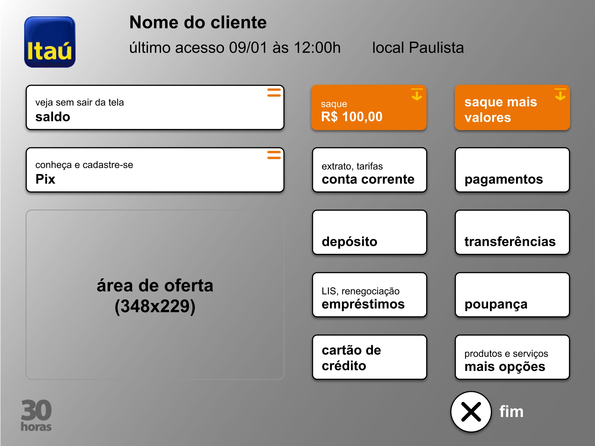
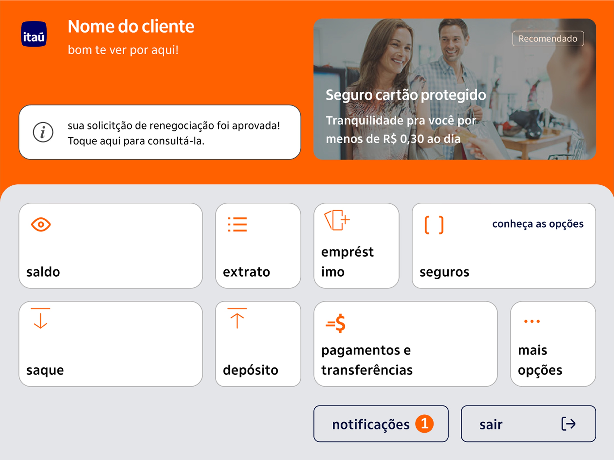
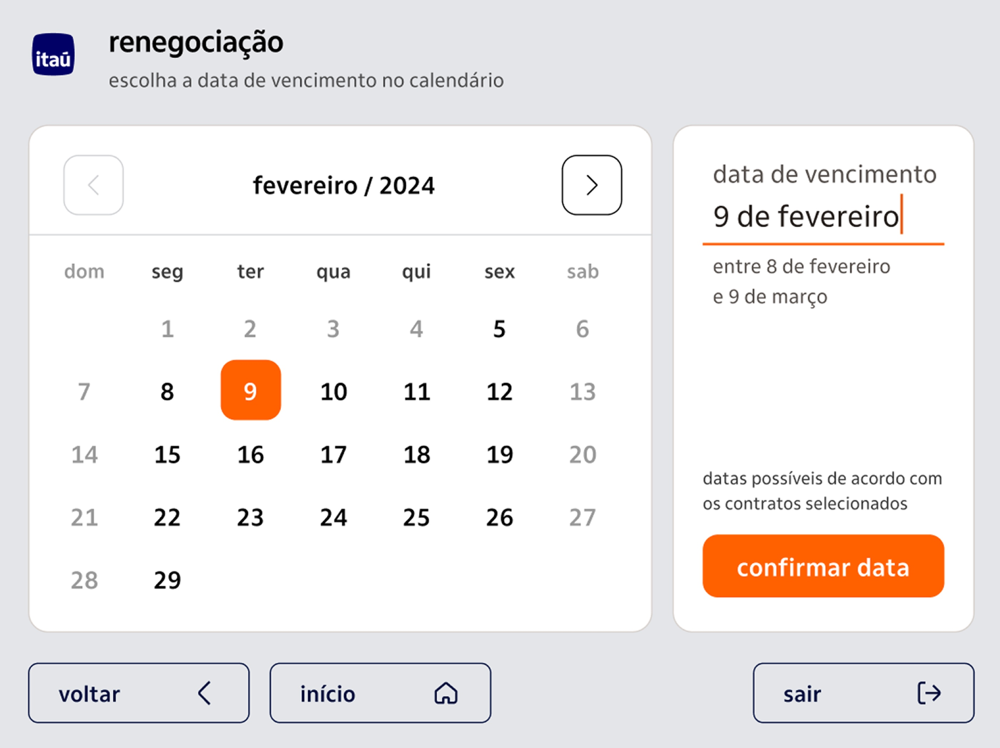
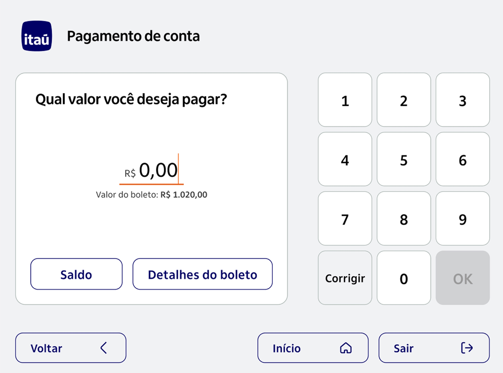
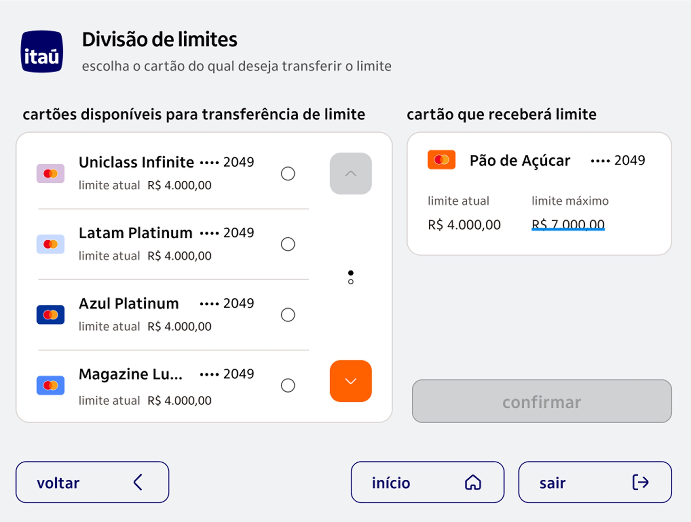
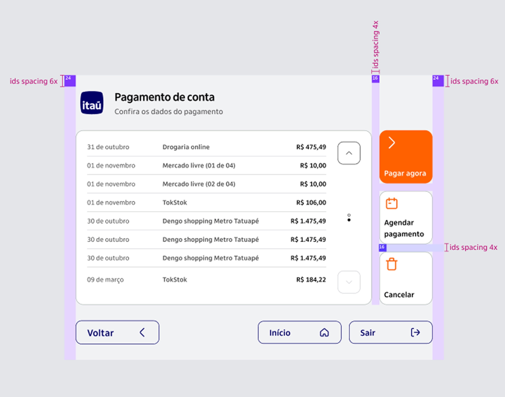

What I did
- Field research in branches and lab sessions with disabled and older customers
- Full redesign of the terminal’s screens and journeys
- A design system built from scratch for the ATM
- Voice journeys designed alongside every screen
- Accessibility specification for the build
- Handoff and support through development
Outcomes
+50%
Increase in NPS for the ATM experience
−30%
Median time to complete a transaction
2×
Every journey designed twice, once on screen and once in voice
Overview
A full redesign of Itaú’s ATM network, together with a new design system built for it from the ground up. The guiding principle was not visual: the terminal had to work for people with low vision, people with limited mobility, people who cannot read, and older customers standing in a queue with a line behind them.
An ATM is used standing up, often outdoors, often in a hurry, by a customer base that includes people who cannot read a sentence on a screen, people who cannot see it at all, and people whose hands do not land precisely where they aim. The existing terminal had grown into a wall of options of equal visual weight, with the important detail set in the smallest type on the screen. The technology running the machines could not support the screen reader software that already existed on phones and computers, so there was no accessible path at all for a blind customer.
We rebuilt the terminal around what field research showed people actually do at an ATM: they do not read, they orient by shape, colour, position and touch. Fewer options per screen, larger targets, higher contrast, icons carrying meaning alongside words, and the same three exits repeated in the same place on every screen. Underneath it sits a design system built from scratch for the terminal, inheriting the tokens and visual language of the bank’s app so the two products speak the same language. Because no existing screen reader would run on the machines, the bank built its own audio layer, and we designed every journey a second time as a spoken sequence.

3 takeaways
- 01People do not read at an ATM
- 02Complexity does not need more steps
- 03A system built to be built
01
People do not read at an ATM
Field visits to branches and lab sessions with older customers, blind customers, customers with motor disabilities and customers who cannot read all pointed the same way. Nobody reads a screen while standing at a machine with people waiting behind them. They scan for shape, colour and position, and they confirm with their hands.
That finding decided the rest: the secondary microcopy that used to carry the important detail was removed, the numbers that matter were made large enough to check at a glance, and every constraint was stated in words rather than implied by a disabled control.

02
Complexity does not need more steps
Splitting a credit limit between cards is the most complicated thing a customer can do at one of these machines, and it fits in a single screen. Source on the left, destination on the right, current and maximum limits side by side, and a confirm button that stays inactive until there is a real choice to confirm. Card art and brand marks do part of the work, because a customer who cannot read the card name still recognises it by sight.

03
A system built to be built
The design system was derived from the bank’s app system, reusing its tokens so the terminal would not become an island. What changed came from the physical context: type sizes and touch targets scaled for a screen viewed at arm’s length, contrast raised for glare, options per screen cut, and the same three anchors repeated at the bottom of every screen so a customer can leave from anywhere without hunting.
Developers received the system and an accessibility specification alongside it, which is the part that decides whether any of this survives contact with the build.

What made it work
- None of the assistive technology that works on a phone would run on the terminals, so the bank built proprietary audio software for its own ATMs
- That left an open design question: what does a journey sound like. The customer never speaks — they listen and they touch the screen
- Each flow was designed a second time as a spoken sequence, with its own wording, its own order, and its own decisions about what is said aloud in a public place
- Developers received two specifications per journey, the screens and the voice, which is what made it possible to build consistently